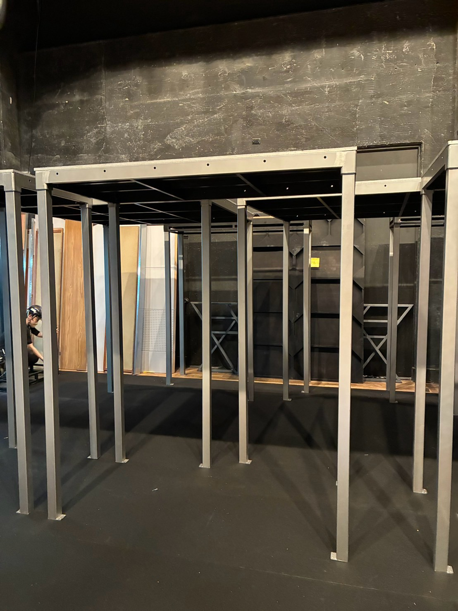

ST-001 / STAGE
スチールデッキ
セットプラン
デッキ本体と希望の高さの60角脚を組み合わせる基本セットです。サイズ・脚高・数量を選択し、会場条件に合わせて正式なお見積もりをご案内します。
要相談・見積
料金はサイズ、脚高、数量、設営条件によりお見積もりします。
希望仕様を選択
1セット＝デッキ1枚＋選択した高さの脚4本。連結金具は構成に合わせてご案内します。
セット内容
- 選択サイズのスチールデッキ 1枚
- 選択高さの60角脚 4本
- 構成に必要な連結金具
仕様
- デッキ厚
- 約106mm
- 天板
- t12mm ベニヤ
- 対応脚
- 60角脚
- 保有枚数
- 在庫状況はお問い合わせください
ご利用上の注意
- 設置床面の水平・耐荷重をご確認ください。
- 屋外利用、段差のある会場、H1000mm以上は事前にご相談ください。
- 安全な構成のため、用途・会場・必要面積を確認してから正式にご案内します。